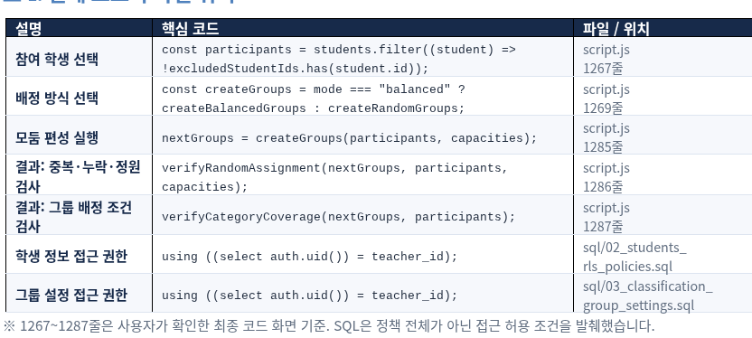
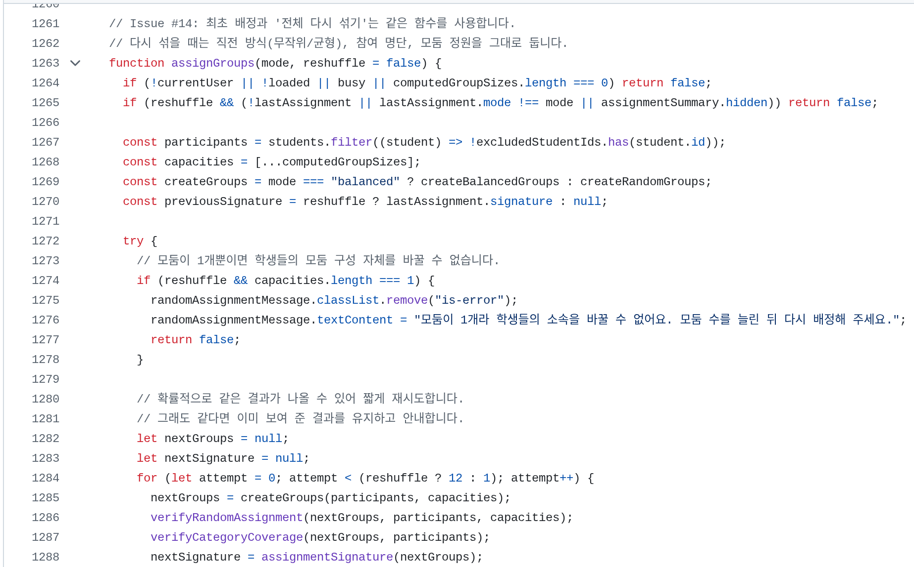
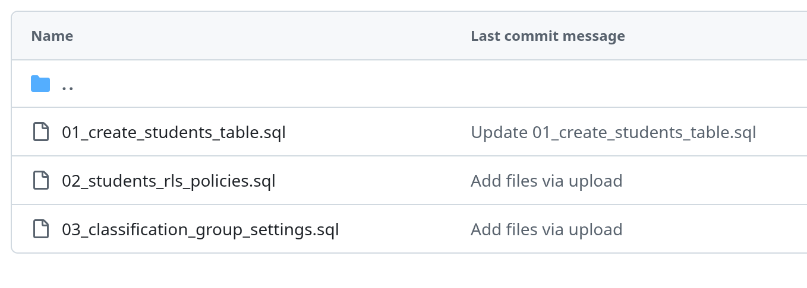
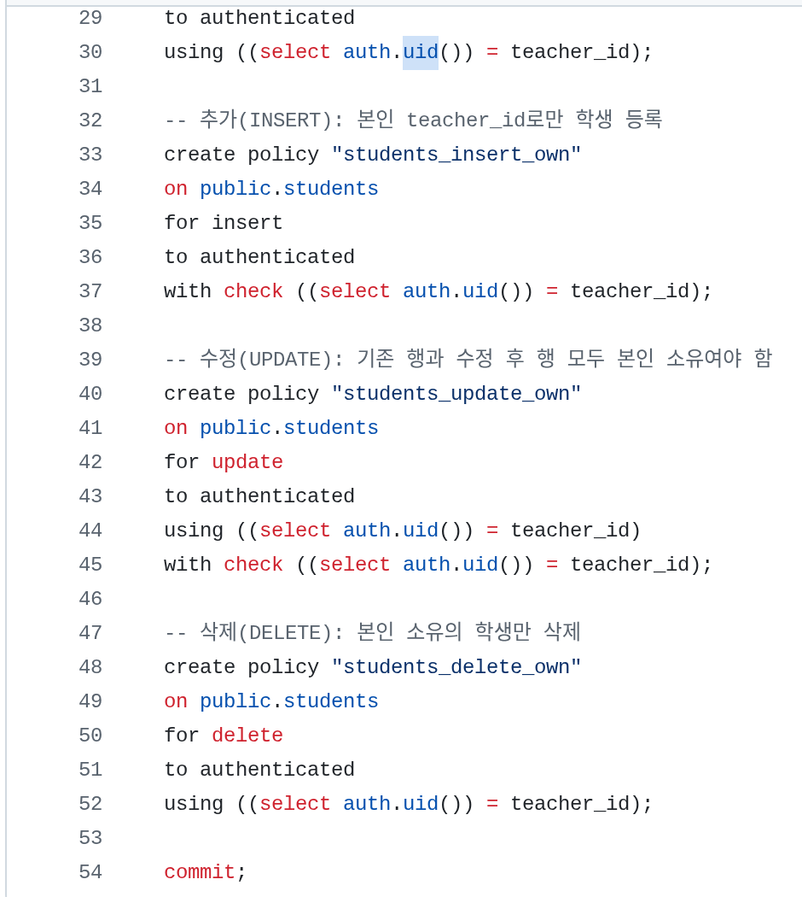
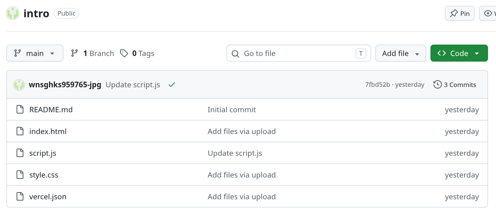

정원을 맞추는 일
모둠 개수에 따라 몇 명씩 들어갈지 직접 계산하고 다시 확인해야 합니다.
AI × EDUCATION HACKATHON
학생의 특성을 고려한 모둠 구성, 이제 명단과 조건만 정하면 돼요.
초등교사의 실제 수업 준비에서 출발한 웹앱, 우리 반 모둠 편성기를 소개합니다.
01 / THE PROBLEM
체육시간 두 팀을 나누거나 모둠 과제를 준비할 때, 교사는 숫자뿐 아니라 학생의 특성도 함께 고려합니다.
모둠 개수에 따라 몇 명씩 들어갈지 직접 계산하고 다시 확인해야 합니다.
미리 정한 분류 그룹의 학생들이 일부 모둠에 몰리지 않도록 배치해야 합니다.
결석자가 생기거나 모둠을 다시 구성하면 앞의 과정을 반복해야 합니다.
만들고 싶었던 것 — 학생 명단을 한 번 등록해 두고, 수업 목적에 맞게 빠르고 편리하게 모둠을 구성하는 도구.
02 / BEFORE & AFTER
체육시간처럼 팀 구성이 필요한 순간, 기존에는 약 5분이 걸리던 편성을 이제 버튼 한 번으로 빠르게 마칠 수 있습니다.
교사가 학생을 직접 지목하는 대신 설정한 조건에 따라 배정해, 팀 구성에 대한 불만을 줄이는 데에도 도움이 되었습니다.
03 / CORE FEATURES
학생 관리, 모둠 설정, 결과 공개까지 필요한 일만 순서대로 진행합니다.
학생을 등록하고 1~8개 분류 그룹으로 정리해요. 명단과 그룹 설정은 Supabase에 저장됩니다.
참여 학생과 모둠 수를 정하고, 각 모둠의 정원을 직접 조정할 수 있어요.
모둠 결과를 전자칠판에 보여주고, 공개 화면을 유지한 채 바로 다시 섞을 수 있어요.
04 / LIVE DEMO
아래는 가명 학생 12명으로 만든 소개 사이트 전용 미리보기입니다. 원본 앱에서는 교사 로그인 후 학생 관리와 모둠 편성 기능을 모두 사용할 수 있습니다.
실제 앱 링크는 연결 전입니다. 아래 미리보기를 먼저 이용할 수 있어요.
05 / ACTUAL CODE & SECURITY
학생 선택부터 모둠 편성과 결과 검사까지, GitHub에 저장된 실제 코드를 보여드립니다. 학생 기록은 Supabase의 RLS 정책으로 보호합니다.
학생 선택부터 모둠 배정과 결과 검사, 교사별 접근 권한까지 실제 코드의 역할을 정리했습니다.

사진은 실제 GitHub에서 캡처한 화면입니다. 항목을 선택하면 코드의 역할과 저장 위치를 볼 수 있습니다.

script.js 1267~1287줄 · 사진을 누르면 크게 볼 수 있습니다.참여하지 않는 학생을 제외하고 실제 배정할 학생만 고릅니다.
students.filter(...)무작위 배정인지 균형 배정인지 선택합니다.
mode === "balanced" ? ...참여 학생과 모둠별 정원에 맞춰 실제로 모둠을 만듭니다.
createGroups(participants, capacities)학생이 빠지거나 중복되지 않았는지, 배정 조건이 지켜졌는지 검사합니다.
verifyRandomAssignment(...)“참여 학생을 고르고, 선택한 방법으로 나눈 다음, 결과가 올바른지 확인하는 코드입니다.”

My_intro/sql의 파일 목록학생 이름, 교사 ID, 분류 그룹을 저장하는 students 테이블을 만듭니다.
학생 정보의 읽기·추가·수정·삭제를 교사 본인에게만 허용하는 규칙을 작성합니다.
분류 그룹 수를 1~8개로 확장하고 교사별 그룹 수 설정을 저장합니다.
“GitHub에는 SQL 파일을 기록하고, Supabase SQL Editor에서 실행해 데이터베이스에 적용했습니다.”

sql/02_students_rls_policies.sql 실제 코드 · 29~54줄(select auth.uid()) = teacher_id로그인한 사람의 ID와 학생 기록의 교사 ID가 일치해야 접근할 수 있습니다.
USING으로 본인 학생만 조회
WITH CHECK로 본인 명단에만 등록
USING과 WITH CHECK로 수정 전후 확인
USING으로 본인 학생만 삭제
“테이블별 접근 권한은 SQL 파일에 적고, 교사 A·B의 가명 계정으로 데이터가 분리되는지 검사했습니다.”

intro교사 로그인·학생 관리·모둠 편성 등 실제 기능을 담은 프로젝트입니다.
문제, 개발 과정, 실제 코드와 시연을 보여주는 발표용 사이트입니다.
두 프로젝트를 각각 웹주소로 배포하고 소개 사이트에서 실제 앱으로 이동하도록 연결했습니다.
“GitHub로 변경 내용을 기록하고, 코드를 업로드한 뒤 Vercel에서 배포했습니다.”
06 / FEEDBACK & NEXT
처음 생각한 기능에서 멈추지 않고 실제 사용 흐름을 점검하며 기능을 개선했습니다.
학생 분류 그룹은 4개로 고정
→ 1~8개까지 설정·저장공개 화면에서 다시 섞으려면 화면 이동
→ 공개 화면에서 즉시 재배정테이블마다 별도 접근 권한 확인 필요
→ RLS 정책과 교사별 데이터 분리 검사지난 모둠 편성 기록 저장·불러오기
모둠 결과 인쇄용 화면
실제 교실 사용성 검토와 접근성 개선
이 기능들은 현재 제공되는 기능이 아니라 앞으로 추가해 보고 싶은 개선 방향입니다.